| |
Motion Machine |
Design a machine that makes a motion.
Use the materials left over from the holiday season to create and build a machine that makes at least one motion. Then, present your machine, show how it works, and give a demonstration. This was difficult for the students because it was the first time they actually had to build what they had designed. Many of the designs started out as very complex creations and soon the students realized that what they had designed was too difficult for them to build. They revised their creations many times and in some cases the final result looked little like the original. - Karen T.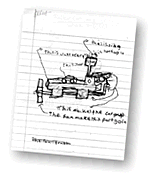
|
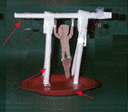 Gymnastic Bar |
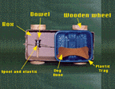 Dog Bone Delivery Car |
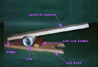 Can Scruncher |
|
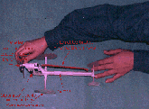 Wind-up Plane |
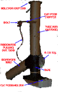 Cat Toy |
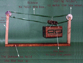 Mountain Lift |
|
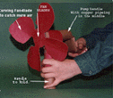 Pump Fan |
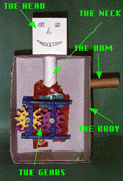 Head Guy |
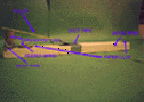 Egg Cracker |
|
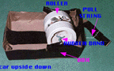 Roller Car |
|
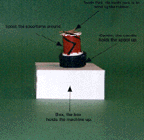 Wind-up Toy |
|

|
What other machines could you build out of stuff that's just sitting around your house? Try to build a motion machine to feed your pet. A rubber band is nifty machine part. Be good to yourself; start simple. |
|
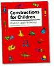 |
|
|
||
|
||
|
|
||
 Gathered by topic |
 Connected together |
 Index of ideas |
 Search |